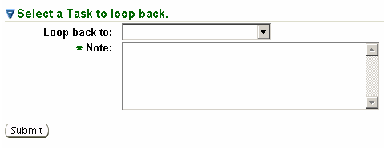

Previous Topic
Next Topic
| Workflow |
Previous Topic |
Next Topic |
The third-level
menu, Loop Back, of the Task Profile page allows you to return to a previous workflow task and
continue processing from that point. Only available after completion of the
first task in a workflow and can only be accessed from the Task Profile page of a task that is not yet completed. The heading Select a Task to loop back will appears on the right side of the
page and displays a pick list of previous tasks, labeled

Select the task
to return to from the pick list. You
will also be required to enter a Note into the Note field. Click Submit to return to the Task Profile
page of the task you selected to loop back from. To navigate to the task
you looped to, click on the task in the Workflow Diagram. The last digit of the Task ID for each repeated step will increase by
one, as will the number in the corresponding task box of the Workflow Diagram page.
Copyright © 1996, 2004, Oracle. All rights reserved.